高年齢男性向けフリップアンケ記事を題材に、横展開の本質を「構成コピー」から「心理動線の再翻訳」へ引き上げるための部内共有メモ。
今回の学びは、横展開とは「売れている記事の見た目や問いを移植すること」ではなく、「横展元が読者に起こしている感情を、今回のペルソナの悩みの深さ・解決策との距離に合わせて再翻訳すること」だと整理できる。
制作者の仮説記事035は、市況に少ない「高年齢男性向け + フリップアンケ」の穴を狙い、Juno男性フリップアンケの構成をクマ再生注射に横展開した記事。
実績で支持ただし数値上は、同じクマ男性商材の好調記事よりCPCが高い一方でMCVRは同水準に留まり、CVR/利益も弱い。レビュー会の「MCVRとCVRがもう一歩」という課題感は数値と整合する。
改善筋最大の論点はQ3。「どのようにクマをなくしたいか」という問いは、解決策をすでに知っている読者には効くが、クマが美容医療で治せることを知らない高年齢男性には距離がある。先に「そんな方法があるのか」「切らずに短時間でいけるのか」という解決期待を作る必要がある。
横展開は、元記事の順番やデザインをそのまま移す作業ではない。元記事のターゲット前提まで見たうえで、その記事が読者に起こしている心理を読み取り、横展開先のターゲットでも同じ心理が起きるように伝え方を作り直す作業。
FV、質問、教育、CTA、FAQなど、読者がどの順番で情報に触れるかを分解する。
その読者は悩みをどれくらい深く感じ、どんな対策や解決策を知っているから、その構成で動くのかを仮説化する。
元記事ターゲットの前提込みで、不安、驚き、期待、安心、納得、行動意欲のどれを作っているかを言語化する。
悩みの深さ、普段の対策、商材理解、解決策との距離に合わせて、同じ心理が起きる表現へ変える。
ただ再現するだけでなく、画像、言い方、順番、具体例でその心理をより強く感じさせる余地を探す。
同じ質問や教育でも、誰に向けているかで役割が変わる。レビュー会でも、元記事の構造は見えていた一方で「元記事が狙っているユーザー層」まで深掘りできていなかったことが論点になった。元記事ターゲットの悩みの温度感や商材理解度を置くと、そのパートがなぜ効くのかを読み違えにくくなる。
今回で言えば、Junoの読者は「痩せるにはダイエットが必要」「食事制限や運動は大変」という前提を持っているから、Q3の「どのように痩せたいですか？」で解決期待が生まれる。クマ男性は「クマは治せるものだと思っていない」「美容医療で治せることを知らない」可能性があるため、同じ聞き方では心理が再現されにくい。
「JunoがQ1でこう聞いているから、今回も似た質問にする」「元記事が4問構成だから4問にする」のように、見えている形だけを移す。これだと、読者の前提が違う時に心理が再現されない。
「JunoのQ3は、ダイエット経験者が知っている辛さを外して解決期待を作っている。では、クマ男性にも同じ期待を作るには、先に“美容医療で治せる・切らない・短時間”を見せる必要がある」と考える。
| 見るポイント | 元記事Junoのターゲット前提 | 元記事で起きている心理 | クマ男性で再現するなら |
|---|---|---|---|
| Q1後の教育 | 痩せたいが、努力だけではうまくいかない感覚を持っている。 | 「努力不足ではなく、脂肪細胞という原因があるのか」と驚く。 | 「老け見えは年齢のせいだけではなく、目元の膨らみや影に原因があるのか」と自分ごと化させる。 |
| Q3の解決方法 | ダイエットという解決策を知っていて、食事制限や運動の大変さも知っている。 | 食事制限や運動の辛さを知っている読者に、「それなしで痩せられるかも」と期待させる。 | 美容医療でクマが治せることを知らない読者に、先に「切らずに注射で相談できる」「短時間で済む」という発見を作る。 |
| Q4の未来像 | 痩せた後の生活や見た目の変化を想像しやすい。 | 痩せた後の自分を想像させ、回答しながら欲求を強くする。 | クマが消えた後の若々しさ、明るい印象、仕事や写真での見え方をビジュアルで選ばせる。 |
| 記事 | COST | MCV | CV | 利益 | ROAS | CPC | MCVR | CVR | 実質CVR |
|---|---|---|---|---|---|---|---|---|---|
| ★009 クマ男性 通常 | 85,568円 | 10 | 5 | 33,182円 | 138.8% | 719円 | 8.40% | 50.00% | 4.20% |
| ★027 クマ男性 メガネ男 | 6,726,926円 | 1,886 | 340 | 1,438,324円 | 121.4% | 592円 | 16.59% | 18.03% | 2.99% |
| ★035 クマ男性 高齢向けフリップ | 328,503円 | 77 | 11 | -67,253円 | 79.5% | 695円 | 16.28% | 14.29% | 2.33% |
| 記事 | リリース日 | COST | MCV | CV | 利益 | ROAS | CPC | MCVR | CVR | 実質CVR |
|---|---|---|---|---|---|---|---|---|---|---|
| ★035 クマ男性 高齢向けフリップ | 5/29 | 340,114円 | 78 | 11 | -78,864円 | 76.8% | 698円 | 16.02% | 14.10% | 2.26% |
| ★037 二重女性 綺麗めフリップ | 5/25 | 739,239円 | 172 | 34 | 116,711円 | 115.8% | 629円 | 14.64% | 19.77% | 2.89% |
| ★009 鼻女性 綺麗めフリップ | 5/22 | 1,168,674円 | 377 | 95 | 365,576円 | 131.3% | 516円 | 16.64% | 25.20% | 4.19% |
| ★024 ピコレーザー男性 綺麗めフリップ | 5/22 | 1,366,442円 | 720 | 109 | 342,133円 | 125.0% | 335円 | 17.68% | 15.14% | 2.68% |
| ★030 クマ再生注射女性 綺麗めフリップ | 5/19 | 9,057,034円 | 3,007 | 515 | 4,397,341円 | 148.6% | 596円 | 19.77% | 17.13% | 3.39% |
実績で支持★035はフリップアンケ群の中でもCPCが高めで、MCVRは突出して高くない。記事内の興味形成、教育到達前の引き込み、Q3以降の心理接続に改善余地がある仮説を補強する。
| 商材 | TCB クマ取り再生注射。0円オファーを前面に出せる美容医療商材。 |
|---|---|
| ターゲット | 45〜65歳男性。ぷくっと膨らんだ脂肪、黒い影ができている目元に悩む層。 |
| 市場の穴 | 市場は20〜40代向け、通常記事、即CTA、直LP、ステップアンケが中心。高年齢男性向けフリップアンケは少ない。 |
| 構成参考 | Juno男性フリップアンケ。補助としてATOM AGA。Junoのアンケート/教育の流れを横展開。 |
| 戦術判断 | 横展開 + 市況差別化。市況にない見せ方で男性向けフリップアンケの成功事例を作る狙い。 |
| 主要課題 | 横展元の構成は持ってこれているが、横展元のターゲット理解と今回ターゲットの解決策理解度の差分補正が浅い。 |
横展開で借りるべきなのは「問いの文言」ではなく、「その問いで読者に起こしている心理」。Junoはダイエットの辛さを既に知る層に、ATOMはAGAの悩みと解決方法に一定の理解がある層に向けて設計されている。
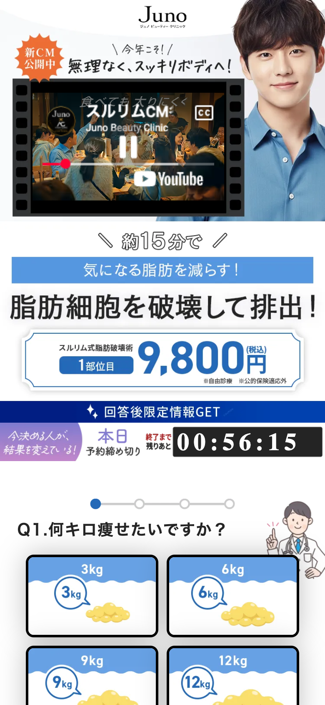
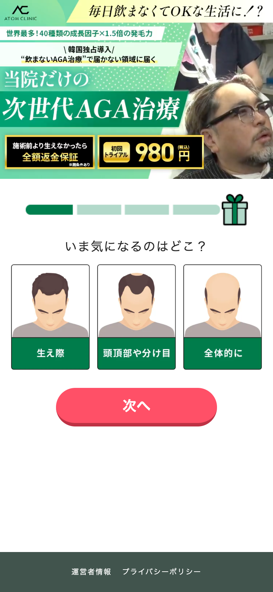
LP上の事実Junoは、Q1「何キロ痩せたいですか？」、Q2「いつまでに痩せたいですか？」、Q3「どのように痩せたいですか？」、Q4「痩せたらどうなりたいですか？」という4段階。
LP上の事実Q1後は「食べても太らないあの子...違いは脂肪細胞の数!?」という教育画像で、努力不足ではなく脂肪細胞という原因へ視点を移す。
制作者の仮説この役割は、驚きと解決期待の同時発生。読者に「自分ではどうにもならない原因だったのか」「原因が分かったなら改善できるかも」と思わせる。
横展開判断クマ男性へ持ってくるなら、「4種類あります」だけでは弱い。読者が知らない原因と、だから医療で改善できる期待まで翻訳する必要がある。
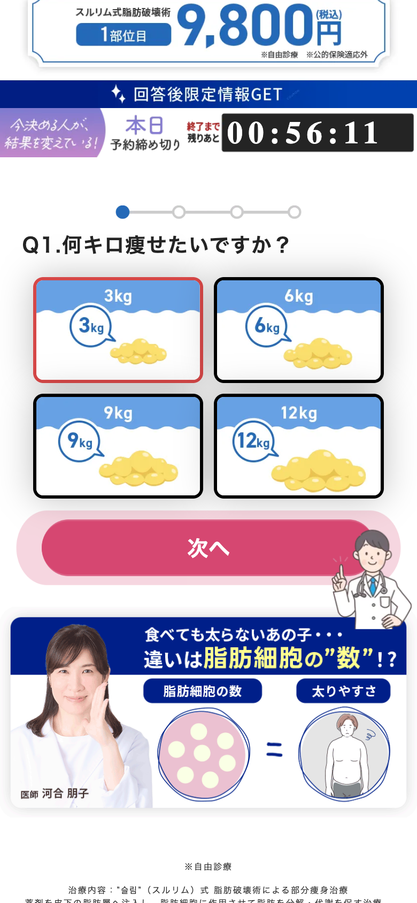
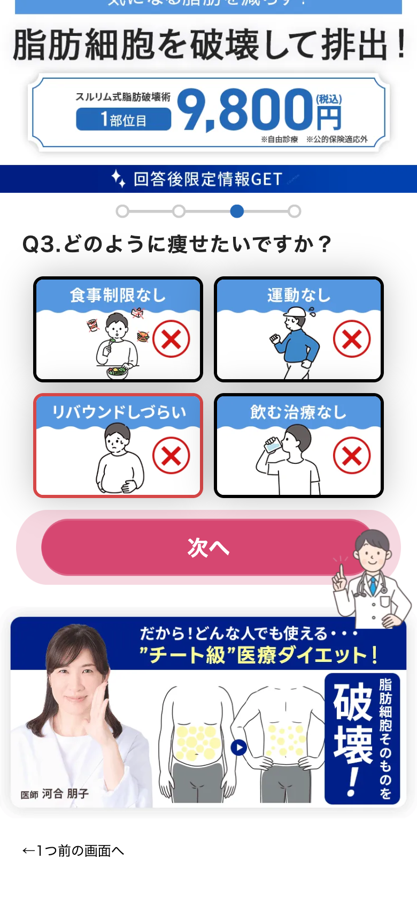
LP上の事実ATOMは、Q1で気になる部位、Q2で悩みへの共感、Q3で解決方法、Q4で改善後の未来を聞く。
制作者の仮説男性向け商材では、ただ不安を煽るより、悩みの自己認識から「解決方法として何を重視するか」へ進ませる設計が参考になる。
横展開判断ただしクマ男性はAGAよりも「美容医療で治せる」という認知が遠い可能性がある。Q3の前に、解決策の存在とハードルの低さを強く出す方が合う。
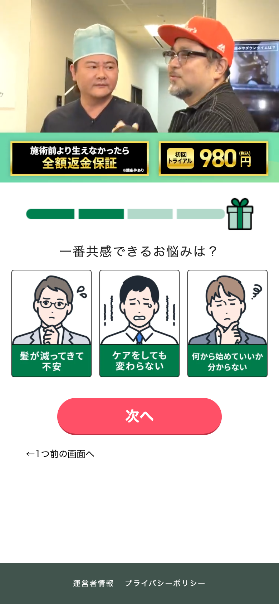
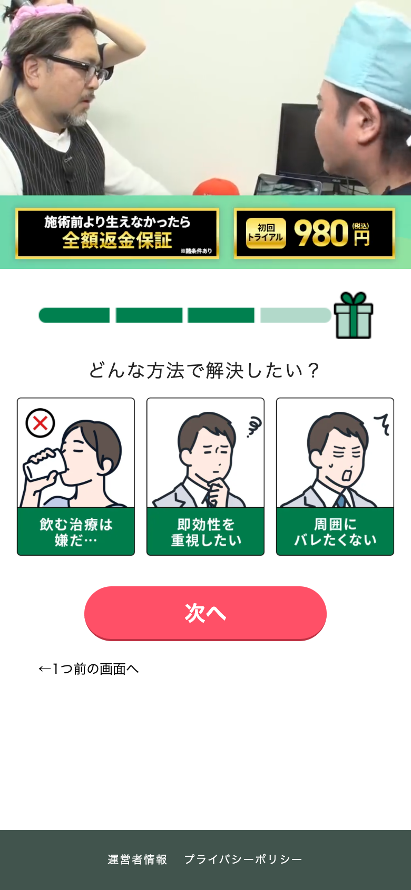
LP上の事実FVは「たるみ」「膨らみ」「黒い影」を消し、ハリツヤのある若々しい印象を目指せる訴求。0円オファーも大きく表示。
制作者の仮説高年齢男性には、共感より先に「若々しい印象」「0円」「切らない」という解決期待を作る設計。
未確認FV別の媒体差分はレビュー会で話題に出たが、今回HTMLでは1パターンのみ扱う。
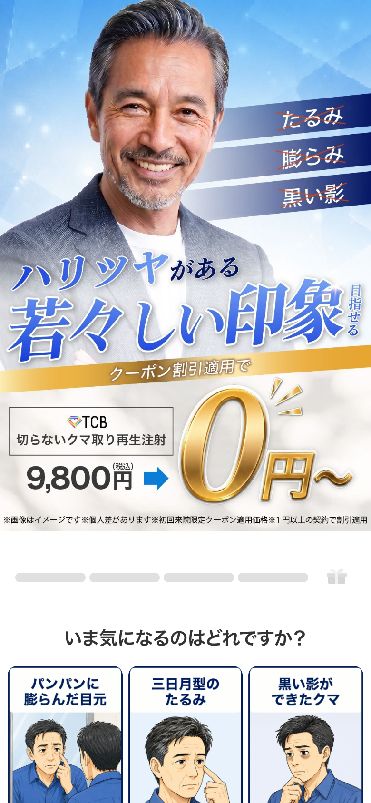
LP上の事実Q1は「いま気になるのはどれですか？」として、パンパンに膨らんだ目元、三日月型のたるみ、黒い影ができたクマを選ばせる。
LP上の事実回答後に「実は...クマには4つの種類があった!?」と、青クマ・黒クマ・茶クマ・複合クマを出す。
レビュー指摘「4つの種類があった」は分類情報としては分かるが、自分の症状と原因が直感的に結びつきにくい。たるみ、黒い影、膨らみなど症状名で伝えた方がよい可能性がある。
横展開判断Q1で残す核は「自分の状態に名前をつける」こと。変える表層は分類名ではなく、ターゲットが鏡を見て感じている症状表現。
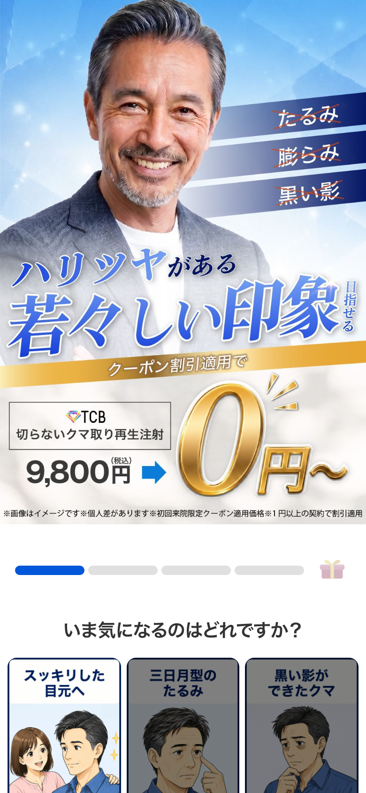
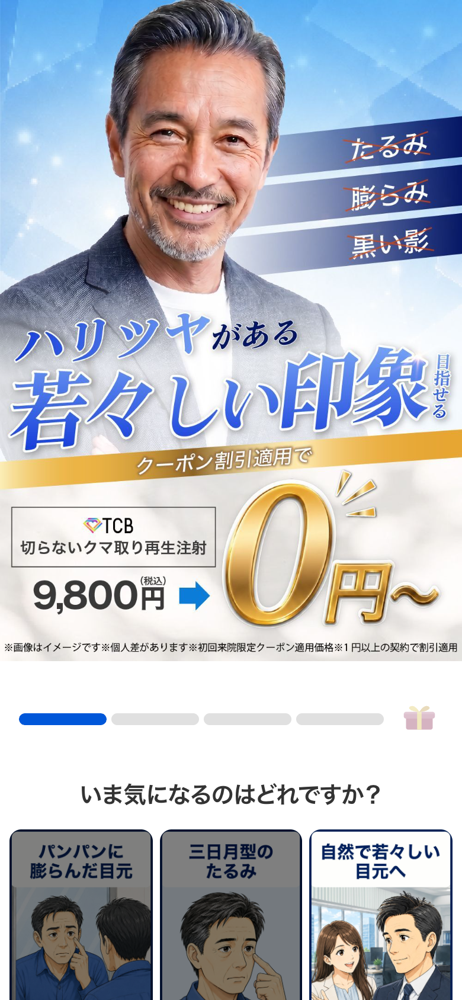
LP上の事実Q2は「いつまでにクマを無くせたら嬉しいですか？」として、3日以内、1週間以内、1ヶ月以内を選ばせる。
レビュー指摘イラストの差分が弱く、カードごとの意味差が視覚的に伝わりにくい。Juno元記事でもここは強い差分が少ないため、そのまま踏襲した印象。
横展開判断このパートの役割は期限の回答取得ではなく、即効性や近い未来への期待を作ること。カード画像は「予定」「人前に出る」「写真」「仕事」など、期限の理由が見える方がよい。
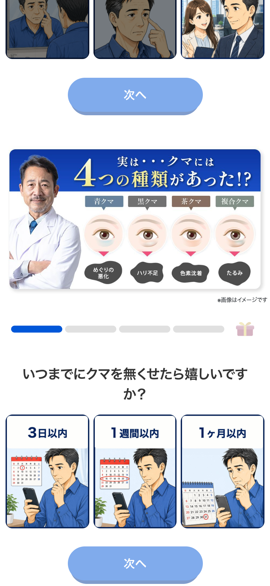
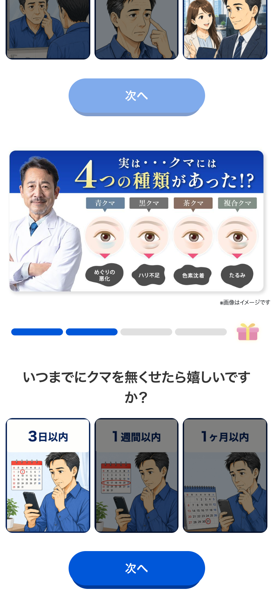
LP上の事実Q3は「どのようにクマをなくせたら良いですか？」として、費用、痛みやダウンタイム、恥ずかしさなどの懸念をカード化している。
レビュー指摘ここが最重要論点。Junoの「どのように痩せたいですか？」は、読者がダイエットの大変さを知っているから効く。クマ男性は、美容医療でクマをなくせること自体を知らない可能性が高く、「どのように」と聞かれても前のめりになりにくい。
改善仮説「クマは切らずに注射1本で改善を目指せる」「最短10分」「スーツのまま帰れる」など、知らなかった解決策の存在とハードルの低さを先に見せる方が、JunoのQ3と同じ驚きを再現しやすい。
横展開判断残す核は「既存の不安や辛さを外して、解決策への魅力を作る」こと。変える表層は問いの言い方。解決策認知が低い層には、懸念を聞く前に解決策の発見を置く。
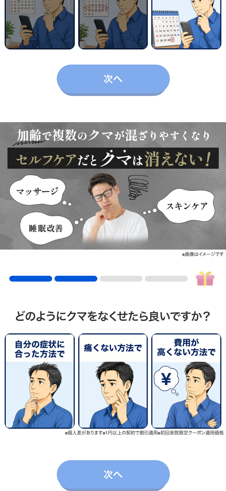
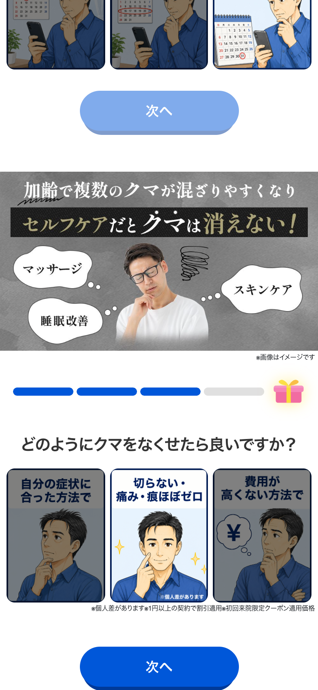
LP上の事実Q4は「クマを無くせたらどうなりたいですか？」として、昔のような若々しさ、明るい印象、同世代と差が出る印象を選ばせる。
レビュー指摘理想と一緒に添える画像は、悩んでいる状態よりも「選びたい未来像」にした方が直感的に答えやすい。明るい印象なら明るい印象の男性、若々しさなら若々しい男性、渋く年を重ねたいならイケオジを見せる。
横展開判断Q4で残す核は「なりたい未来を自分で選ばせる」こと。変える表層は、読者が拒否なく憧れられる男性像。年齢をラベル付けするより、本人が欲しい自己像に寄せる。
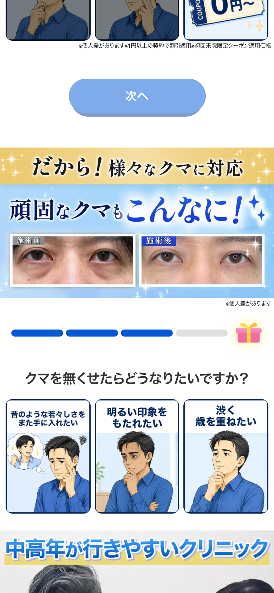
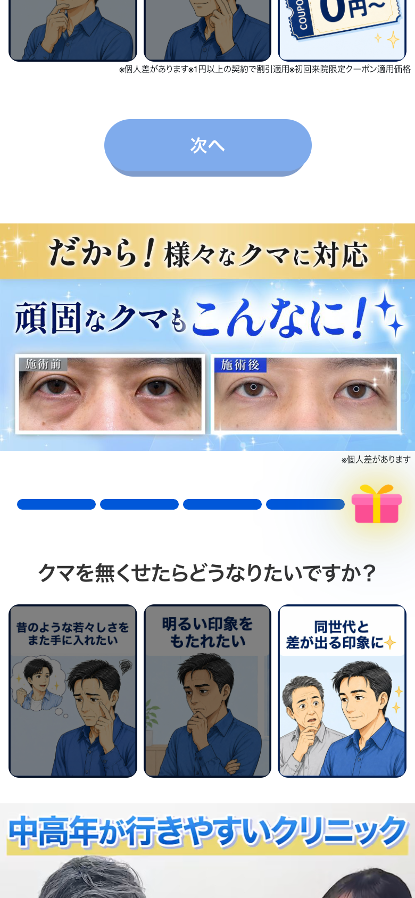
LP上の事実Q4後に「だから！様々なクマに対応」「中高年が行きやすいクリニック」と続き、施術前後の比較や動画風の見せ方を挟む。
レビュー指摘「中高年」というワードは、人によっては不快感や拒否感を煽る。若くいたい男性に対して「あなたは中高年です」と言っているように見える可能性がある。
改善仮説言い換えるなら「同年代の男性も相談しやすい」「仕事帰りにも相談しやすい」「男性も入りやすい」など、年齢ラベルではなく来院ハードルの低さに変換する。
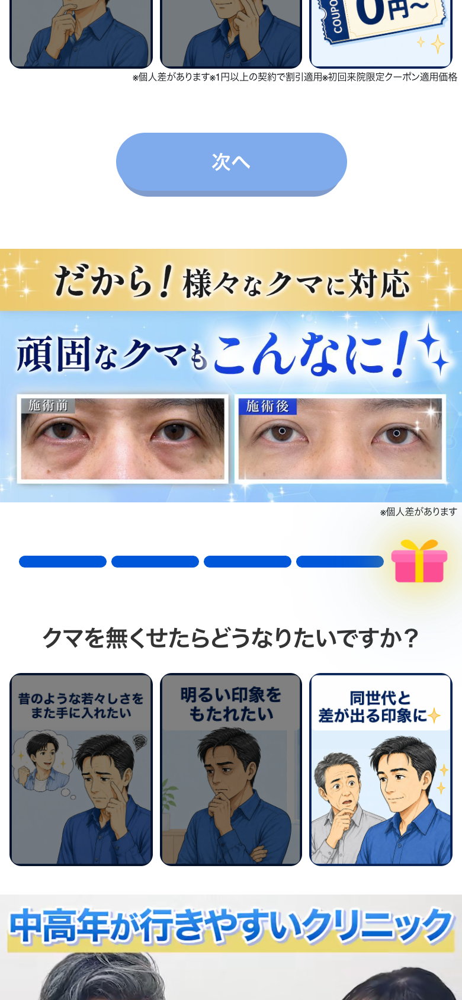
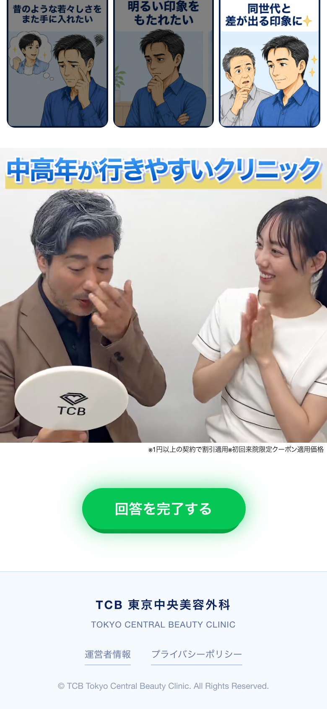